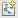
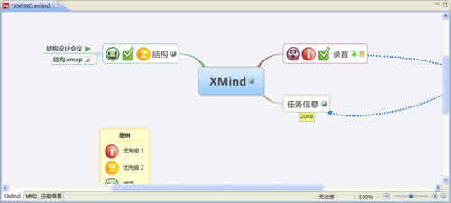
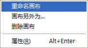

XMIND的文件名称是“.XMAP”。每一个“.XMAP”则是一个工作簿，每个工作簿中可以有多张相互独立的思维图。您可以十分方便的创建多张图，以及修改它们的名字。方法如下：
按照下列方法创建多张图：
- 第一种方法就是双击XMIND编辑区底部的空白处即可新建。
- 点击工具栏上的“新建” 图标。

按照下列步骤修改单张图：
- 选中某张图的名字；
- 点击鼠标右键打开右键菜单；
-
您能够进行下列修改：
- 重命名图。
- 另存图为…：将此张图另存为一个新的独立的“.XMAP”文件。
- 删除图。

注意：
- 工作簿中的每张图都是相互独立的，可以各自设定不同的结构、属性、风格等等。
- 每张图的默认名称都是中心主题的内容。
您可能还对下列内容感兴趣……